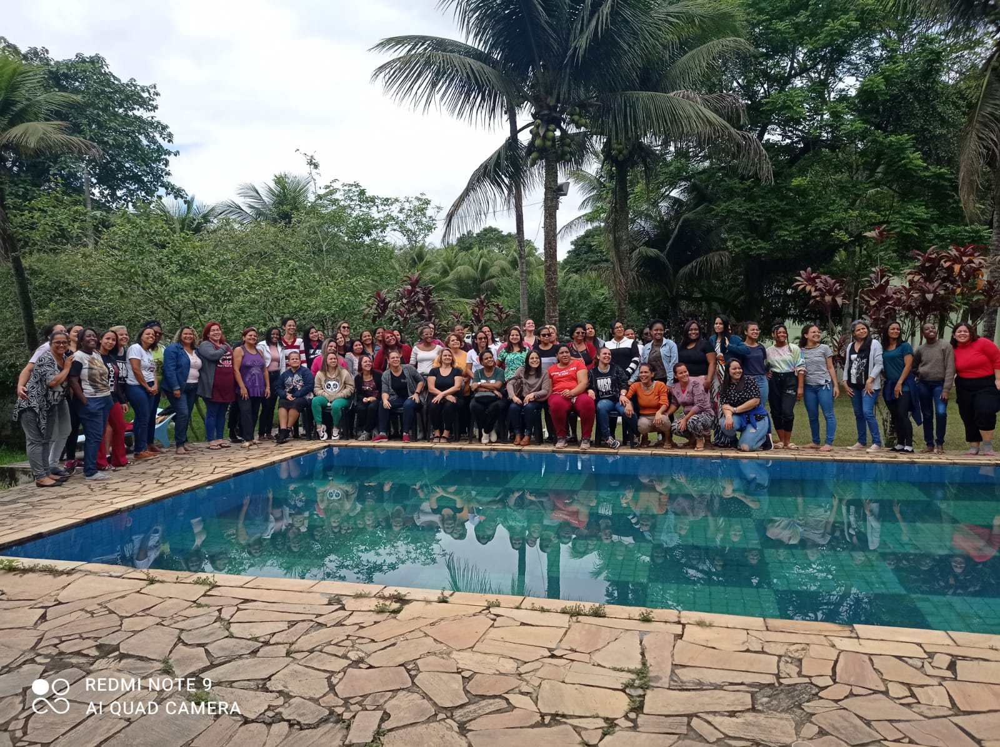

Retiro de mulheres Tema: Frutifique
Uma imersão de 3 dias com muita palavra, louvores, teatro, palestras e testemunhos em um lugar tranquilo e preparado para acomodar nossas Anas.
ParticipeUma imersão de 3 dias com muita palavra, louvores, teatro, palestras e testemunhos em um lugar tranquilo e preparado para acomodar nossas Anas.
ParticipeAna foi uma mulher estéril e o Senhor trouxe fertilidade sobre a vida dela, a função desse projeto é isso trazer fertilidade na área da vida das mulheres que estão em mistérios onde elas não produzem mais, sem esperança, mulheres que não sonham, mulheres que perderam a vontade de viver, trabalhar para que elas sejam curadas totalmente e conseguir enxergar em Cristo há esperança para vida dela.

Projeto testificado através das vidas da diaconisa Gloria e Pastora Fernanda

Pra. Roberta (21) 98636-5262
Pra. Fernanda (21) 96508-1144
Dia. Glória 97459-9876.
Ministério Profético Adonai - Corumbá
Av. Fuscão, 255 - Autódromo, Nova Iguaçu - RJ, 26042-070
Direção: Pastor Régis Lima dos Santos